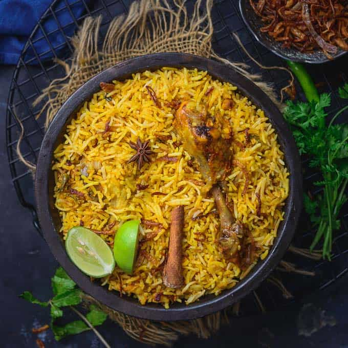
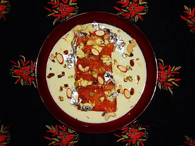

HYDERABAD BIRYANI
Hyderabadi biryani is generally believed to have originated in the kitchens of the Nizam of Hyderabad,[2] of the historic Hyderabad State, as a blend of Mughlai and Iranian cuisine.[3][4] Hyderabadi biryani is a staple of Indian cuisine.Hyderabadi biryani is of two types: the kachchi (raw) biryani, and the pakki (cooked) biryani.Ingredients of Hyderabadi Biryani Recipe | Hyderabadi Chicken Biryani Recipe:Half boiled rice layered with fried onions, mint, cooked mutton, sealed with dough and slow cooked 'dum' style

Ingredients of Hyderabadi Biryani Recipe | Hyderabadi Chicken Biryani Recipe:Half boiled rice layered with fried onions, mint, cooked mutton, sealed with dough and slow cooked 'dum' style
DOUBLE KA MEETA
Double ka meetha is a bread pudding Indian sweet of fried bread slices soaked in hot milk with spices, including saffron and cardamom.[1] Double ka meetha is a dessert of Hyderabad, Telangana.[2] It is popular in Hyderabadi cuisine, served at weddings and parties. Double ka meetha refers to the milk bread, called "Double Roti" in the local Indian dialects because it swells up to almost double its original size after baking. The dish is similar to Shahi Tukra which has its roots in Awadhi cuisine. It is particularly prepared during the festive month of Ramadan and on Eid. The recipe uses bread, condensed milk, and dry fruits.
HALEEM
Hyderabadi haleem is a type of haleem popular in the Indian city of Hyderabad. Haleem is a stew composed of meat, lentils and pounded wheat made into a thick paste. It is originally an Arabic dish and was introduced to the Hyderabad State by the Chaush people during the rule of the Nizams (the former rulers of Hyderabad State). Local traditional spices helped a unique Hyderabadi haleem evolve,[4] which became popular among the native Hyderabadis by the 19th century. The preparation of haleem has been compared to that of Hyderabadi biryani. Though Hyderabadi haleem is the traditional hors d'oeuvre at weddings, celebrations and other social occasions, it is particularly consumed in the Islamic month of Ramadan during Iftar (the evening meal that breaks the day-long fast) as it provides instant energy and is high in calories. This has made the dish synonymous with Ramadan. In recognition of its cultural significance and popularity, in 2010 it was granted Geographical Indication status (GIS) by the Indian GIS registry office,[5] making it the first non-vegetarian dish in India to receive this status.